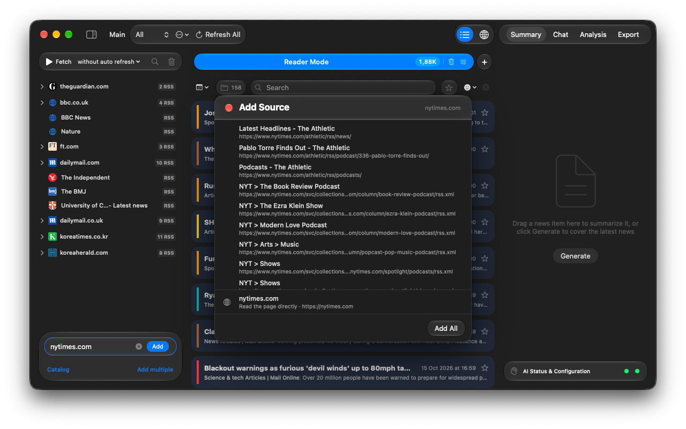
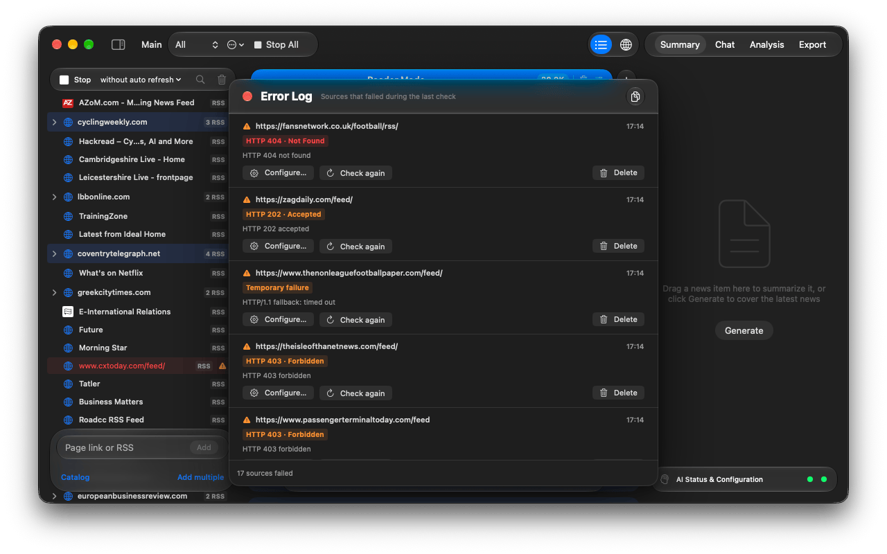

Handbook · Sources
Adding your own sources
Add any site or feed by address, paste many links at once, organise folders and fix failing sources.
One source
- Type a site or feed address into Page link or RSS at the bottom of the sidebar and press Return. Suggestions from the catalog appear while you type.
- A direct feed address is added right away.
- For a site, the Add Source panel lists the RSS feeds it found. Click one to preview it, + to add it, or Add All.
- The row Read the page directly adds the page itself as a Website source. It is offered even when feeds exist, because feeds often carry only part of the front page.

RSS or Website?
| RSS | The site's own feed. Fast and exact: titles, dates and text come straight from the publisher. Marked RSS in the sidebar. |
|---|---|
| Website | The app opens the page and picks the news links out of it. Use it for sites without feeds or when the feed is thin. Marked WEB. How the page is read is set in Processing modes. |
Many sources at once
Click Add multiple, choose RSS or Website, and paste text in any format: a list, an email, a web page. The links are pulled out and listed under Found URLs; press Add.
Clicking a feed: link in Safari also offers to add it, and asks which workspace to use.
Organise the sidebar
- Several feeds of one site fold into a single site group automatically.
- Drag a source onto another to make a folder. Folders are one level deep.
- Right-click a source for Show News (only this source in the list), Collect News (fetch just it), Rename…, Configure…, Copy and Delete.
- The magnifier on top of the sidebar filters the list by name.
Sources that need a login or a tweak
Right-click → Configure…:
- Custom Headers: presets for Basic Auth, Bearer Token or a Cookie, or any header.
- Browser Auth: Authorize on Website opens a built-in browser; log in once and turn on Use browser cookies for this source.
- Content (Website sources): describe what to pick from the page, e.g. news articles,
or give a CSS selector like
.article-list.
When a source fails
A warning triangle marks a source that failed. Click it, or open Window → Error Log, to see why, for example HTTP 404 · Not Found (the feed moved), HTTP 403 · Forbidden (the site blocks readers) or a Temporary failure. Check again retries right away, Configure… adds headers or a login, and the copy button at the top copies all errors for a bug report.

Podcasts
Add podcasts from the catalog's Podcasts list. Opening an episode shows a player (15-second skips, media keys work). The download button saves the episode into the project for offline listening and marks it as a favorite.